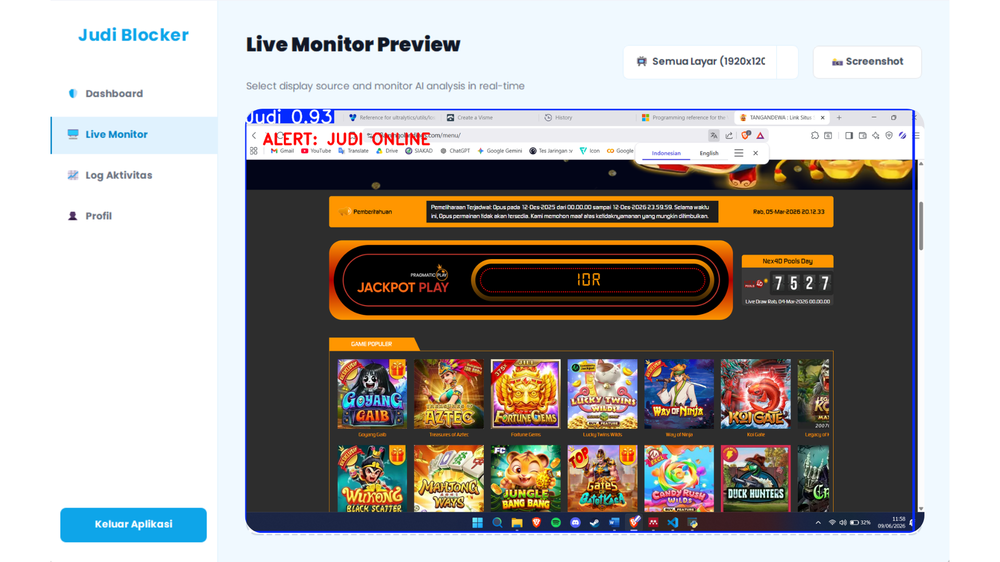

AI-powered desktop application capable of detecting gambling-related objects from website screenshots using Computer Vision and the YOLOv11 object detection model.

Proyek ini dikembangkan sebagai tugas akhir di program studi Teknik Komputer. Sistem ini bertujuan untuk mendeteksi elemen visual terkait perjudian dari screenshot website secara otomatis. Masalah utamanya adalah website perjudian online mendistribusikan banner promosi dalam berbagai bentuk dan warna, sehingga inspeksi manual menjadi tidak efisien. Solusinya adalah membangun aplikasi desktop yang mengintegrasikan Computer Vision dan Deep Learning untuk melakukan pengenalan objek secara otomatis.
Programming Language
Object Detection Model
Image Processing
Desktop GUI Framework
Screen Capture Automation
Dataset Annotation
Mengumpulkan dataset berupa screenshot dari berbagai website perjudian dan melakukan anotasi objek (bounding box) menggunakan platform Roboflow.
Melatih model deteksi objek YOLOv11 menggunakan dataset yang telah disiapkan melalui Google Colab untuk mengenali pola visual perjudian secara akurat.
Aplikasi desktop menggunakan pustaka PyAutoGUI dan OpenCV untuk menangkap layar (screenshot) website yang sedang dibuka secara real-time.
Gambar hasil tangkapan layar diproses oleh model YOLOv11. Hasil deteksi (beserta confidence score) ditampilkan secara visual melalui antarmuka interaktif yang dibangun menggunakan PyQt5.
Model YOLOv11 yang telah dilatih berhasil mendeteksi elemen visual terkait perjudian pada website. Aplikasi desktop ini memudahkan proses inspeksi dan pemantauan secara otomatis, konsisten, dan terukur melalui antarmuka grafis yang ramah pengguna.